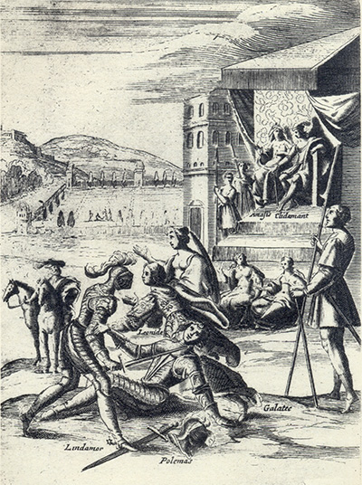
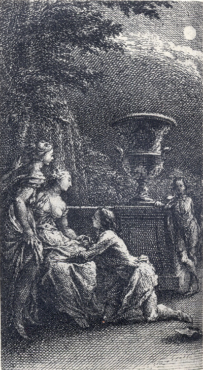

L'Astrée
d'Honoré d'Urfé
Première partie
Livre 9

Le chevalier inconnu (Lindamor) désarme la tête de Polémas. Galathée s'interpose.
Le graveur introduit Léonide
Au second plan, Amasis et Clidaman s'entretiennent (I, 9, 288 recto)
Au fond, Lindamor blessé est soigné par Fleurial, sa tante et sa soeur (I, 9, 291 recto)
L'AstréeI, 9. Édition Vaganay**, 1925Le chevalier inconnu (Lindamor) désarme la tête de Polémas. Galathée s'interpose.
Le graveur introduit Léonide
Au second plan, Amasis et Clidaman s'entretiennent (I, 9, 288 recto)
Au fond, Lindamor blessé est soigné par Fleurial, sa tante et sa soeur (I, 9, 291 recto)
(Voir Illustrations)

De nuit, Lindamor déguisé en jardinier offre son cœur à Galathée
en présence de Léonide et Fleurial (I, 9, 300 recto)
L'AstréeI, Édition Vaganay**, 1925De nuit, Lindamor déguisé en jardinier offre son cœur à Galathée
en présence de Léonide et Fleurial (I, 9, 300 recto)
(Voir Illustrations)
Édition de 1607, 366 recto (sic pour 266 recto).
Édition de Vaganay, p. 323.
Tirez de votre mal la connaissance de votre bien :
si vous n'eussiez point été aimé, on n'eût pas
ressenti peu de chose. Vous ne pouvez savoir quelle
est votre offense que vous ne soyez présent, mais
espérez en votre affection et en votre retour.
Je lui écrivis de cette sorte afin que la tristesse ne nuisît pas à ses blessures et qu'il guérît plus tôt. Il me récrivit ainsi :

Livre 8

Livre 10
Référence électronique :
document.write('"'+document.title.substr(0, document.title.indexOf("-")-1)+'". '+"Dernière mise à jour : "+ExtractDate(document.lastModified)+".")Deux visages de L'Astrée.
©2005-2020 E. Henein.
URL :
var today = new Date();
document.write(document.URL +
"<br>Consulté le : " + today.toLocaleDateString("fr-FR") + ".");
var _gaq = _gaq || [];
_gaq.push(['_setAccount', 'UA-19288475-1']);
_gaq.push(['_trackPageview']);
(function() {
var ga = document.createElement('script'); ga.type = 'text/javascript'; ga.async = true;
ga.src = ('https:' == document.location.protocol ? 'https://ssl' : 'http://www') + '.google-analytics.com/ga.js';
var s = document.getElementsByTagName('script')[0]; s.parentNode.insertBefore(ga, s);
})();
Deux visages de L'Astrée.
©2005-2019 Eglal Henein. Creative Commons 4 
Édition critique de la première partie de L'Astrée (1607, 1621)
mise en ligne le 9 avril 2007
Édition critique de la deuxième partie de L'Astrée (1610, 1621)
mise en ligne le 10 octobre 2010
Édition critique de la troisième partie de L'Astrée (1619, 1621)
mise en ligne le 1er novembre 2014
Édition critique de la quatrième partie de L'Astrée (1624)
mise en ligne le 15 janvier 2019
document.write("Dernière mise à jour : "+ExtractDate(document.lastModified))